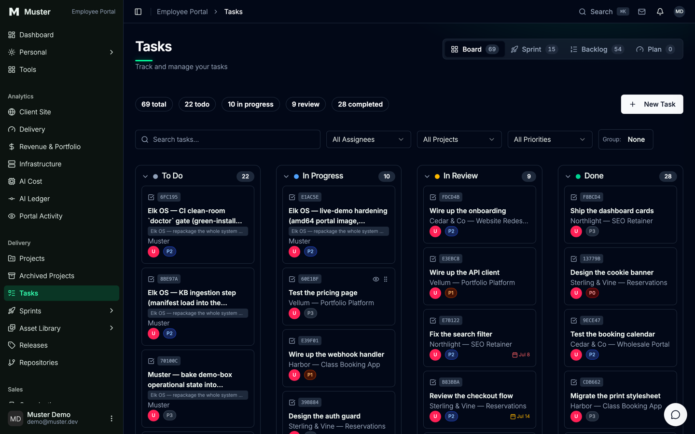

Muster
A self-hostable operating system for agentic software teams. It built itself.
This is the story of how Muster got built, by the thing it packages. If you want to know what Muster does for you, start on the product page.
You and a fleet of AI coding agents work one shared task board over MCP. The row you drag is the row an agent picks up and writes back when it is done. On top runs a local RAG engine and Elk Chat, a private assistant over your own knowledge base and task data: no API key, nothing leaves the box. One command stands the stack up on a laptop or a cloud box, six take an empty volume to a green doctor board, and Docker is the only hard dependency.
This page is the build log. The links are the live system. Designed, governed, and shipped by Mike Walliser.
Week one in service: 18 production PRs across 8 repos in 48 hours, behind a 3-reviewer gate that said no four times. The receipts ↓
read-only demo login: demo@muster.dev / muster-demo · archived board snapshot
§1 · Abstract
On the evening of June 29, 2026, an empty git repository became a live, internet-reachable, self-hostable software product. The arc from scaffold to public demo took about 2.5 hours of wall-clock, spanned 8 phases, 27 commits and 90 files, and was executed by a governed fleet of roughly 30 Claude subagent invocations consuming over 2 million tokens. It runs on a single AWS instance for about $2–4 per month at demo duty-cycle (stopped when idle), and you can open it right now.
That an agent fleet emits files quickly is not the interesting part; volume is unfalsifiable and ages badly. The interesting part is the apparatus that let a long, multi-session, ship-grade build hold together without a human reviewing every diff, and the fact that the system used that apparatus on itself. The thesis: the value is the architecture, not the prompt.
Three costs, kept apart on purpose: hosting (~$3/mo at demo duty-cycle) is not the one-time build model-spend, and neither is the ongoing cost of running the fleet on your next project. The cheap number is only the box.
§2 · Governance is the product
The system built itself.
The system that ships the system used its own task board as the build's spine, its own governed fan-out to construct one of its own subsystems, its own adversarial verifiers to keep its sellable template clean, and its own loop-proofs to catch bugs in its own packaging.
Call this dogfooding, not proof of necessity. Self-use shows the apparatus is coherent and usable: it can carry its own non-trivial build. It does not show the apparatus is necessary, or net-positive in dollars. The honesty is the point.
The single architectural claim this rests on:
The real build board that built this demo, exported live from the working CMS with hierarchy and statuses preserved, is browsable read-only, inside a seeded working agency: 8 organizations, 11 projects, and a live, still-growing task board.
app.musterr.dev
· demo login demo@muster.dev / muster-demo
Origin clause: Muster began as the internal OS of one agency, Analog Elk. That lineage is now just the first profile (analogelk) shipped alongside a generic one: a demonstrated feature, not the headline.
§3 · What Muster is
Four planes around a task board.
Read it as a transferable mental model: you can build all four on any vendor's stack. The architecture figure:
Governance · Claude-side constitution
A numbered, versioned ruleset (CLAUDE.md) loaded into every session: secrets are env-only, one trunk equals production, never edit a contested worktree. The build ran under the author's ten-section constitution; the repo ships a distilled per-profile cut. Plain-English code that makes a stateless model behave like a long-lived teammate.
Task bus · the Directus os_* board
A shared board every agent reads, claims, updates and closes over Directus's native MCP endpoint. The task record is the coordination atom: claimable units of work.
Memory + RAG · the local engine
On-disk memory files are the knowledge substrate (lessons not derivable from code or git); the append-only log is the narrative substrate (what happened, in order). A local RAG engine indexes all of it, and Elk Chat reads it back, permission-aware. More below.
Portal · the human read-side
A Next.js surface where a human watches the same rows the fleet works. Ships two profiles (generic | analogelk), the detail that makes "it's a product, not an internal tool" true at the code level.
The intelligent layer, private by construction
The newest plane is a local RAG engine: FastAPI on :9100, fastembed with BAAI/bge-small-en-v1.5 (384-dim embeddings), backed by Postgres, Qdrant and Redis. It runs entirely on your box, with no API key and nothing leaving the machine. On top sits Elk Chat, an in-portal assistant over your own knowledge base and task data.
The security posture is the point. The RAG is treated as an untrusted ranking oracle: every result it returns is re-gated through the portal's role-based permission filter using the caller's own token, so Elk Chat can never surface a document the user is not allowed to see. Retrieval ranks; permissions decide. Rate-limited and hardened throughout.
§4 · One receipt, end to end
A paper about receipts should show one.
The RAG service claimed port :9100. A naive health check reported "healthy." It was lying: a different engine, already running, was answering on that port, and the check passed for the wrong reason. Here is the whole trail, on the board:
The thing that caught it was not a smarter agent. It was a from-zero environment. Every other proof section can stay summary because this one is concrete.
§5 · The build, in 8 phases
17:56 → 20:23 PT · 2026-06-29
The Build-Trail: stacked steps, each a verified phase accreting upward, the top step the live system.
27 commits · 90 files · the spine of every phase was the os_tasks board, still live and browsable behind the read-only demo login.
§6 · The agent fleet
30+ invocations, 6 fan-outs, 2M+ tokens.
Two named set-pieces carry the number:
- The 8-agent schema build (~546k tokens by session accounting): ground → fan-out → scrub-audit → 3 adversarial leak-verifiers.
- The 4-lens live-AWS-pricing cost panel (~256k tokens).
The rest were parallel explorers, builders and verifiers spread across P0–P7, several single-shot. Not all of them produced kept work. Some fan-outs returned partial or discarded output that was retried or dropped, and that wasted production is part of the real token cost in §7. The discard rate was not instrumented; that is itself a measurement gap.
§7 · Bugs the machines caught
~7 functional bugs, 6 brand leaks. None caught by a human running the software.
| Defect / risk | What caught it | Needed the fleet? |
|---|---|---|
| RAG :9100 port collision | from-scratch loop-proof | No. Any disciplined agent |
| Health check fooled by a co-located engine | clean-room reproduction | No. Single-agent reachable |
| Missing releases.repository_id FK | loop-proof | No |
| set -e / pipefail bug in doctor | loop-proof | No |
| arm64-vs-amd64 portal-image mismatch (fixed live) | live deploy | No |
| Compose RAG-off abort | loop-proof | No |
| AE seed files colliding with a kept UI collection | scrub-audit | Partly (seam) |
| 6 real AnalogElk references in the sellable template | scrub-audit + 3 adversarial leak-verifiers | Yes. Multi-tenant policing |
Most functional catches are loop-proof wins a single disciplined agent could reach. The genuinely fleet-dependent win is the system policing its own multi-tenancy before shipping a sellable generic template. The brand leaks are string-checkable; a grep catches those too. The fleet's marginal value is the seam and the semantic cases. The scrub is a capability, not a confession.
§8 · Governance & safety
The honesty ledger is the design feature.
0 secret leaks. DB and admin tokens were always env-referenced, never echoed, never committed; grep-verified, not assumed. On the 28 worktrees: we avoided the contested checkout entirely by building read-only from a frozen snapshot. 0 collisions by not participating in the contention, not by handling it.
Defects shipped: I can count catches, not misses, and the post-ship audit finding real ones is the ledger working, not failing. "0 at publication" was survivorship, stated as such at the time.
§9 · Durability across sessions
7+ sessions, zero context loss.
State held across three substrates: the board (coordination spine), on-disk memory files (knowledge), and the append-only log (narrative). A single rolling window cannot physically hold a 2M-token build; it compacts, forgets, re-reads, re-litigates. Externalizing state turned an impossible-for-one-window task into a resumable one. That is the cleanest win, because it is categorical. It was later tested the hard way: on 2026-07-01 the orchestrating session was killed mid-flight by a machine crash; because every unit of work lived in the task record and per-agent journals, a fresh session reconstructed the full state and resumed with zero lost work.
The spine has its own coordination problem
The board is shared mutable state and a single point of coupling, the first thing a CTO probes, so here it is straight. A row carries assigned_to and status; the protocol is a compare-and-set. But Directus gives no true row lock by default, and the build observed version collisions across parallel sessions; re-check before write. Contention was actually controlled one level up, by disjoint dispatch plus worktree isolation, not by the board being magically atomic. Scale past human-arbitrated dispatch and you need real claim semantics (optimistic concurrency, or a queue in front of the board). That is not built, and the row does not give it to you for free.
§10 · vs. an ungoverned single-agent workflow
No strawman. A workflow, not a product.
| Ungoverned single-agent workflow | Muster |
|---|---|
| one rolling context window | durable task board + on-disk memory + append-only log (7+ sessions, no loss) |
| serial work, no coordination substrate | 30+ subagents across 6 fan-outs around a shared board |
| trusts its own output | loop-proofs + adversarial verifiers, with honest attribution of which catches needed the fleet |
| ad-hoc, no written rules | a written, §-numbered constitution loaded every session |
Prior-art, stated so the win isn't rigged: the real alternatives aren't a chat transcript: they're git branches/PRs, markdown plan-files in a repo (this kit uses those too), and framework state (LangGraph / CrewAI / Swarm). Muster's bet is a queryable, multi-writer, cross-session task board as the durable coordination atom, used alongside files, not instead of them.
§11 · Addendum · in service · updated 2026-07-14
The build log ends June 29. The system didn't.
Everything above was written the night of the build. What follows happened after, in production, and is checkable in public repo history. The same apparatus runs a real agency: real clients, real invoices, uptime monitoring, backup restore drills, release automation.
- 18 pull requests to production in one 48-hour window, across 8 repositories, including 10 to the agency platform that pays the bills, with releases cut by automation (Muster v0.1.1 and the platform's v1.21.0, both 2026-07-02).
- The 3-reviewer adversarial gate said no four times, with evidence. One "fix" it proved a complete no-op via its own deploy preview: the real defect was a CMS value, fixed at the source instead. One broke a test mock: fixed, re-verified, then shipped. One sitemap change would have advertised noindexed soft-404 pages: split, the safe half shipped. One blog rollout is still held, because indexing thin pages before the content exists is an SEO regression. A gate that only ever says yes is decoration.
- The orchestrating session was killed mid-flight by a machine crash. Because every unit of work lives in the task record and per-agent journals, a fresh session reconstructed the full state and resumed with zero lost work: §9's thesis, demonstrated the hard way, on itself.
- 2026-07-14: the intelligent layer shipped into the demo. The portal now carries Elk Chat and the local RAG engine of §3; retrieval runs behind the same read-only login (generation stays keyless on the public demo, the exact boundary the whitepaper draws). The demo workspace grew to a seeded working agency: 8 organizations and 11 projects alongside the original build record. Write posture re-verified the same day: create, update, and delete all return 403 for the demo role.
Same rule as the rest of this page: logged, reproducible events, not projections.
§12 · Run it yourself
Six commands. The doctor board is the proof.
The apparatus is public and self-hostable. bin/elk-os (the CLI keeps the project's working name, Elk OS) is a resumable, idempotent phase machine whose only hard dependency is Docker (migrate/seed additionally use stdlib python3).
# scaffold → live, from an empty volume bin/elk-os init # scaffold + env bin/elk-os up # compose core (Directus, Postgres, RAG, portal) bin/elk-os migrate # apply os_* schema bin/elk-os seed # profile data (generic | analogelk) bin/elk-os wire # enable native MCP, wire Claude to the board (env-referenced token) bin/elk-os doctor # green/red from-scratch acceptance board
The exhibits: the only outbound destinations that matter. Anything ember is a seam into the running system:

os_* task spine the agents coordinated through. Public & read-only: browse the receipts, you can't write to them.
Enter the live demo ↗
one click, then sign in with demo@muster.dev / muster-demo (read-only)
Read the whitepaper → GitHub repo ↗
TLS note: real browser-trusted Let's Encrypt, auto-provisioned by Caddy. The demo is read-only, and may sleep between showings to save cost.
Analytics, same posture: self-hosted Matomo, first-party, IP-anonymized, skipped entirely when your browser sends Global Privacy Control. No third-party trackers. The privacy page spells it out.
§13 · Author & judgment calls
Mike Walliser
Creative technologist and AI-systems builder. The system is the protagonist; these were the calls no agent made.
Here is what no agent decided. The reframe ("this is a product; Analog Elk is just the case study") was a product call. The honesty ledger exists because a human insisted on it and defined what counts as shipped; agents optimize toward "done," and only a human reliably separates done from claimed-done. Bounding the fan-out ("this is enough verification") is human ROI governance; the machine fans out forever. The arm64/amd64 fix happened live on metal, human-diagnosed. Mike designed this page and the system architecture: the page's craft is the portfolio piece.
The work is the résumé; the human is reachable. mike@analogelk.com · walliser.me
n=1, self-built, author-run, same-base-model verifiers: these limitations are trust assets, stated plainly throughout. Read it as an existence proof and a reasoned playbook, not a controlled study.
Michael Walliser, creative technologist · walliser.me · github.com/AnalogElk/muster